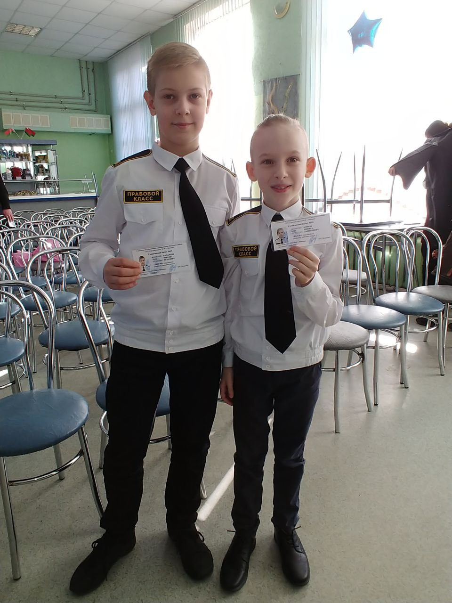
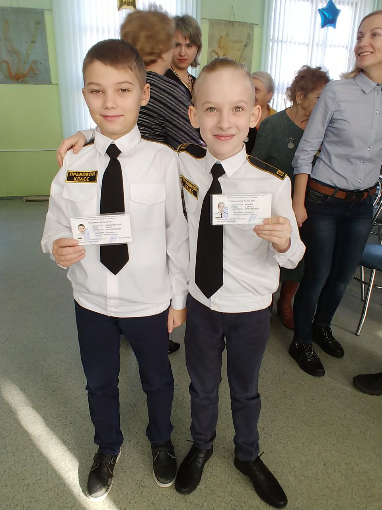
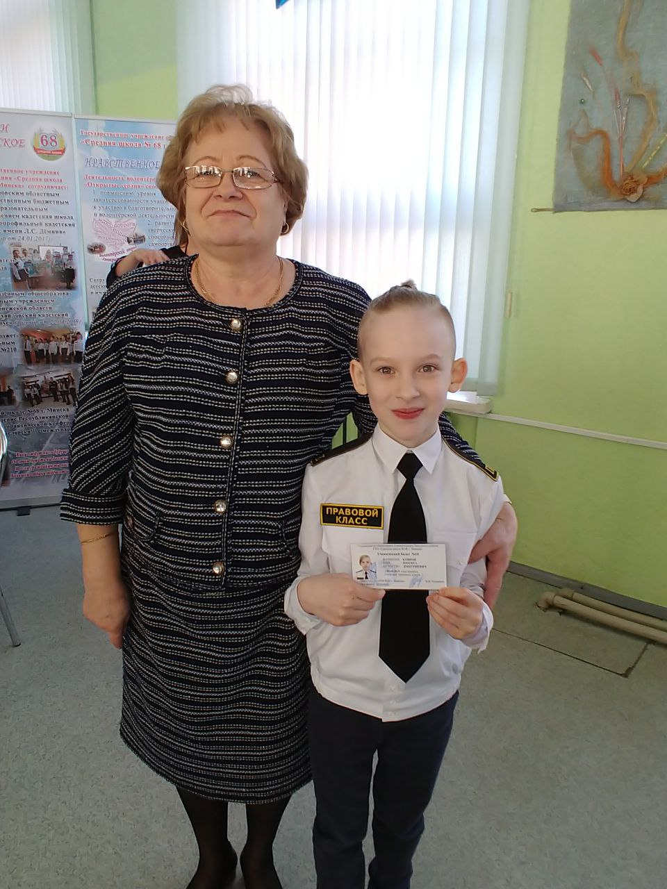
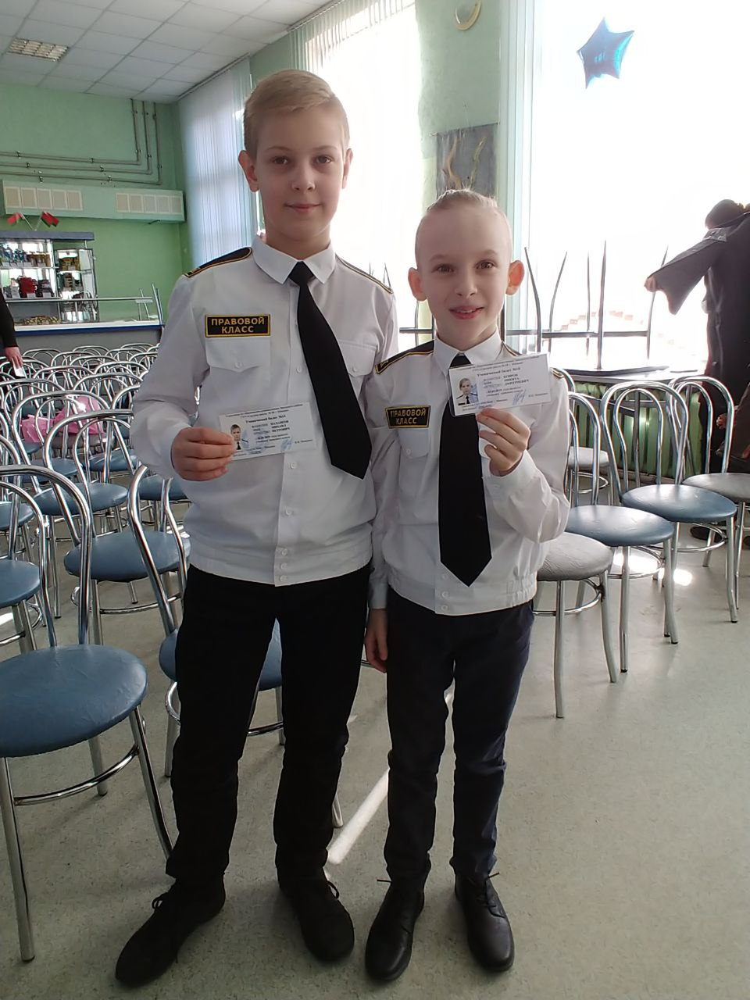
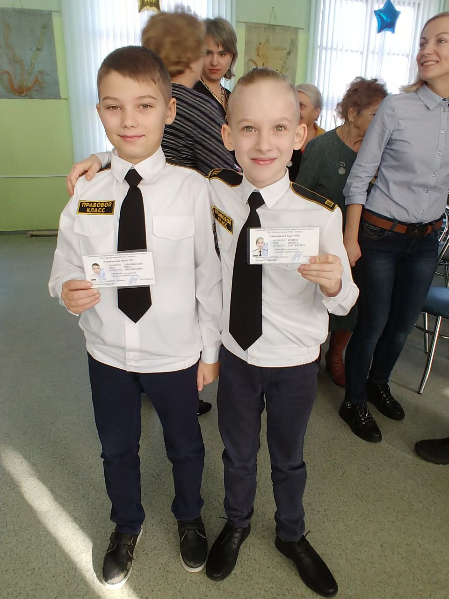
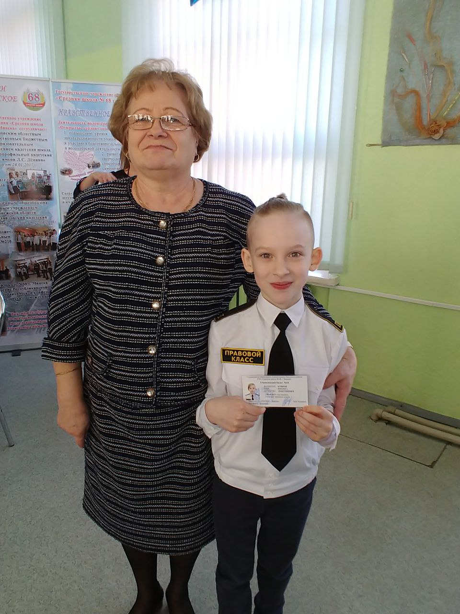

Учащимся правового класса быть престижно. Потому что защита Родины всегда являлась высшим мерилом мужества, гражданской ответственности»
Одни из основных направлений работы в кадетских классах :
-o идеологическое, гражданское и патриотическое воспитание;
-o нравственно-правовое воспитание;
-o овладение ценностями и навыками здорового образа жизни;
Современное белорусское общество осознает необходимость перехода на более высокий уровень развития у подрастающего поколения гражданственности и патриотизма как необходимого фактора дальнейшего развития нашего государства.
В связи с этим организация идеологического и гражданского и патриотического воспитания является приоритетным в воспитательной работе нашей школы.
Будущее Республики Беларусь, прогресс в экономической, политической и социальной сферах в первую очередь зависят от гражданской позиции подрастающего поколения.
Молодой человек, необходимый современному обществу, – это ответственный человек, способный сделать выбор, контролировать свою личную и общественную жизнь, определившийся в отношении ценностей.
В государственном учреждении образования «Средняя школа №68
г. Минска» разработан и внедрён проект по организации шестого школьного дня.
Цель проекта – создание условий для внедрения модели шестого школьного дня, направленной на формирование гражданственности и патриотизма учащихся.
Основываясь на принципах воспитания, а также опыте взаимодействия с Академией МВД, была разработана и стала внедряться в деятельность учреждения образования новая модель организации шестого школьного дня, направленная на формирование гражданственности и патриотизма учащихся.
Я считаю,что основные задачи класса правового направления, это воспитание активной гражданской позиции, профилактика противоправного поведения учащихся, создание условий оперативного решения вопросов, связанных с нарушением прав человека, формирование чувства ответственности за совершённые поступки, распространение идей защиты прав человека.
Подготовка и формирование со школьной скамьи образованных, законопослушных, физически и нравственно развитых молодых людей - носителей традиций и культуры белорусского народа, патриотов своей Родины является актуальным и необходимым для страны делом.
Каждый год на базе нашей школы проходит открытая очно-заочная научно-практическая конференция "На благо Родины и человека!" учащихся классов правовой направленности с международным участием.
В конференции принимают участие учащиеся из Борисова, Гомеля, Минска, Кобрина, Старых Дорог, Слуцка, Тамбова (Россия), Москвы, Екатеринбурга. Конференция проводится в ГУО «Средняя школа №68 г. Минска» совместно с Тамбовским областным государственным бюджетным общеобразовательным учреждением кадетской школой «Многопрофильный кадетский корпус имени Героя Советского Союза лётчика-космонавта СССР Л.С.Дёмина» при поддержке комитета по образованию Мингорисполкома, Минского городского института развития образования и управления по образованию администрации Заводского района г.Минска.
Конференция проводится с целью:
- формирования духовных, гражданских, патриотических и нравственных ценностей молодежи через исследование прошлого и настоящего своей страны;
- стимулирования научно-исследовательской и проектной деятельности учащихся;
- ориентации юных исследователей на создание общественно значимых проектов.
Отличительными чертами и педагогическими особенностями военно-патриотического направления воспитательной работы правовых классов является разнообразие и многогранность подходов, осуществляемых в ходе реализации образовательного процесса, которые не оторваны друг от друга, а направлены на осуществление общей цели – воспитание патриота.
Основной целью школы по данному направлению деятельности является создание необходимых организационно-педагогических условий для активизации, содержательного обогащения и систематизации деятельности педагогического коллектива, органов детского самоуправления по формированию гражданственности через развитие системы социального партнёрства.
Основное внимание наш класс уделяет нравственному воспитанию: развитию самостоятельности, инициативы, ответственности.
Проводятся классные часы, на которых обсуждаются вопросы серьёзного отношения к учёбе, своевременного выполнения домашнего задания, добросовестного отношения к урокам, посещению, говорим о факультативных, стимулирующих и поддерживающих занятиях, а также проводим тематические классные часы по плану.
По итогам 1 четверти класс имеет самый высокий рейтинг в школе.
Класс принимает активное участие в общественной жизни школы.
 




